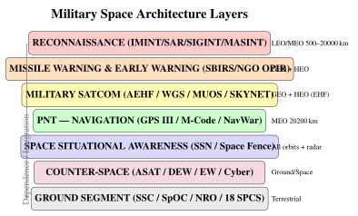

Chapter 21: Military and Intelligence Satellites¶
21.1 Introduction¶
Space is now formally recognised as a warfighting domain alongside land, sea, air, and cyberspace. The United States Space Force (USSF), established December 20, 2019, as the sixth independent branch of the US Armed Forces, reflects a doctrine shift driven by adversary anti-satellite capabilities, the proliferation of dual-use satellite technologies, and the deep integration of space assets into every aspect of modern military operations.
Military space assets provide the C4ISR backbone of modern warfare: Command, Control, Communications, Computers, Intelligence, Surveillance, and Reconnaissance. Without satellite-delivered GPS timing, encrypted communications, overhead imagery, and early warning of missile launches, the operational effectiveness of modern military forces would be catastrophically degraded within hours.
The USSF is organised under Space Operations Command (SpOC) for operational forces and Space Systems Command (SSC) for acquisition and development. The National Reconnaissance Office (NRO), a joint Department of Defense / Intelligence Community agency, funds and operates the nation’s classified reconnaissance satellites with an estimated annual budget of \(\sim\)$15 billion. The USSF budget for FY2024 was approximately $26 billion, reflecting accelerating investment in space resilience and new capabilities.
Space military missions span five domains: (1) intelligence collection (IMINT, SIGINT, MASINT); (2) missile warning and space situational awareness; (3) military satellite communications; (4) navigation; and (5) counter-space operations and space domain awareness. This chapter addresses each domain with technical depth.

21.2 Reconnaissance and Imaging Satellites¶
21.2.1 Optical Imagery Intelligence (IMINT)¶
Optical satellite reconnaissance remains the cornerstone of national technical means of intelligence collection, providing unambiguous identification of military equipment, infrastructure, and activities at ground resolutions well below 1 metre.
KH-11 KENNEN/CRYSTAL: The current generation of NRO electro-optical imagery satellites, designated KH-11 (or “Key Hole” 11), uses a \(\sim\)2.4 m aperture mirror—essentially a Hubble-class telescope pointed at the Earth rather than the stars. Unlike earlier film-return systems (KH-9 HEXAGON), KH-11 uses digital charge-coupled device (CCD) focal plane arrays transmitting imagery via encrypted Extremely High Frequency (EHF) links to NRO ground stations in near-real-time. An estimated five KH-11 satellites are active in two orbital planes, with orbital parameters classified; a typical altitude of \(\sim\)500 km provides approximately 15 cm ground sample distance (GSD) for a 2.4 m aperture at 500 nm.
The diffraction-limited angular resolution:
The corresponding ground resolution at altitude \(h = 500\) km:
In practice, detector pixel size, atmosphere, and jitter set operational GSD at \(\sim\)10–15 cm. At this resolution, individual people, vehicle types, aircraft tail numbers, and antenna configurations are distinguishable. Revisit frequency for a single satellite at LEO is typically \(<\)2 orbits/day over any given target; the two-plane constellation provides roughly 3–4 opportunities per day.
The GEOINT exploitation cycle proceeds through five stages: Tasking (collection managers prioritise requests), Processing (downlink, calibration, geometric correction), Exploitation (imagery analysts identify objects), Analysis (fusion with other intelligence), and Dissemination (finished products to consumers)—the TPED cycle.
Commercial Comparators: The commercial electro-optical market provides publicly accessible high-resolution imagery:
-
Maxar WorldView-3 (2014): 0.31 m panchromatic GSD, 8-band VNIR 1.24 m, 8-band SWIR 3.7 m, 12-band CAVIS 30 m, swath of about 13 km at nadir, DigitalGlobe/Maxar.
-
Planet SkySat (constellation of 21): 0.5 m GSD, 5-band multispectral, video mode 30 fps.
-
BlackSky: a constellation of small imaging satellites with sub-metre-class resolution, aimed at frequent revisit of major cities.
-
Satellogic: 0.7 m optical + 30 m hyperspectral, Argentina-based, cost-driven design.
21.2.2 SAR Reconnaissance¶
Synthetic Aperture Radar (SAR) satellites image through clouds, smoke, and darkness, providing day-night, all-weather intelligence collection—capabilities absent from optical systems.
Lacrosse/ONYX: The NRO’s classified SAR programme, reportedly designated Lacrosse (later ONYX), employs X-band (\(\sim\)9.6 GHz) SAR with an estimated ground resolution of 1–3 m in spotlight mode. The large power requirement (\(\sim\)20 kW) and deployable dish antenna (\(>\)7 m) necessitate large spacecraft buses. SAR delivers range and cross-range resolution:
where \(B\) is transmitted bandwidth, \(R\) is range, and \(L_{\text{synth}}\) is the synthetic aperture length. For \(B = 600\) MHz and \(L_{\text{synth}} = 5\) km at \(R = 500\) km:
Commercial SAR: Government SAR capabilities are increasingly supplemented or replicated by commercial systems:
-
Capella Space (Acadia): 107 kg, X-band, 450 MHz bandwidth, 0.5 m spotlight GSD, ICEYE X-band 15-minute revisit constellation.
-
Umbra: X-band, up to 16 cm resolution in spotlight mode, sub-metric coherent change detection.
-
ICEYE: 14-satellite X-band constellation, 1 m resolution, 15-min revisit capability in certain orbits.
21.2.3 Multispectral and Hyperspectral Intelligence¶
Hyperspectral imagery (HSI) resolves continuous spectral signatures across 100s of narrow bands, enabling material identification, camouflage detection, and chemical plume mapping beyond what panchromatic or multispectral sensors reveal. Classified systems (reported as “MISTY” in open literature) allegedly employ low-observable designs and manoeuvring capability, though details remain classified.
Table 21.1 compares electro-optical and SAR collection characteristics.
| Characteristic | Electro-Optical (Panchromatic) | Synthetic Aperture Radar |
|---|---|---|
| Cloud penetration | None (blocked by clouds) | Yes (all weather) |
| Night operation | Limited (thermal IR only) | Yes (independent of solar illumination) |
| Best resolution | \(\sim\)0.1 m (classified) / 0.3 m (commercial) | \(\sim\)0.1–0.25 m (spotlight) |
| Swath width | 10–300 km | 10–400 km |
| Material ID | Multispectral, hyperspectral | Limited (backscatter characteristics) |
| Foliage penetration | No | Partial (P-band, VHF) |
| Power requirement | Low (passive sensor) | High (active transmitter, 5–25 kW) |
| Data volume | High (16-bit multispectral) | Very high (complex I/Q data) |
| Change detection | Excellent colour/texture | Coherent change detection (mm-level) |
21.3 SIGINT and Electronic Intelligence¶
21.3.1 SIGINT Satellites¶
Signals Intelligence (SIGINT) satellites collect electromagnetic emissions from the ground, air, and sea, providing intelligence on military communications, radar systems, and weapons testing. Three categories of SIGINT exist:
-
COMINT (Communications Intelligence): Intercept of voice, data, and other human communications.
-
ELINT (Electronic Intelligence): Collection of non-communications signals—radars, transponders, and guidance systems.
-
FISINT (Foreign Instrumentation Signals Intelligence): Telemetry from missile and space launch tests.
ORION/MENTOR (Advanced Orion): GEO SIGINT satellites reportedly use deployable unfurlable mesh antennas exceeding 100 m in diameter, the largest human-made structures ever deployed in space. This massive aperture provides sensitivity to very low-power HF and VHF communications at ranges up to 40,000 km from the sub-satellite point. MENTOR collects signals from a fixed GEO position, providing persistent coverage of a specific hemisphere.
Trumpet/USA-227 (HEO SIGINT): Operating in Molniya highly elliptical orbits (12-hour period, \(\sim\)63.4 inclination, 500\(\times\)40,000 km), HEO SIGINT satellites provide long dwell time over polar regions—up to 8 hours per orbit near apogee. This is essential for coverage of Russian and Chinese high-latitude military activities poorly visible from GEO.
Geolocation: A pair of SIGINT satellites can geolocate emitters using Time Difference of Arrival (TDOA):
where \(d_1\) and \(d_2\) are distances from the emitter to two satellites. A hyperbola of possible emitter locations is computed; multiple satellite pairs produce intersecting hyperbolas localising the emitter to \(\sim\)1–10 km.
21.3.2 MASINT and Maritime Awareness¶
Measurement and Signature Intelligence (MASINT) includes nuclear detection (NUDET sensors on GPS satellites), infrared OPIR for missile launches, seismic monitoring, and chemical/biological plume detection from space.
Space-Based AIS: Automatic Identification System transponders, mandatory on vessels \(>\)300 GT, broadcast vessel ID, position, speed, and heading on VHF 161.975 MHz and 162.025 MHz at 9.6 kbps. Space-based AIS receivers (Spire LEMUR-2, exactEarth) capture these broadcasts from 500 km altitude. The VHF signal footprint at 500 km subtends \(\sim\)3,500 km diameter; capacity is limited by multiple-access interference in high-density areas (requiring demodulation of overlapping packets via successive interference cancellation).
Space-Based ADS-B: The Aireon system, hosted on Iridium NEXT payloads, provides 100% global aviation surveillance including polar routes by receiving ADS-B Mode S transponder signals from all equipped aircraft. Processing at \(\sim\)1,090 MHz with 66 LEO receivers achieves \(<\)1 s latency globally.
21.4 Early Warning Satellites¶
21.4.1 Space-Based Infrared System (SBIRS)¶
The Space-Based Infrared System is the United States’ principal ballistic missile launch detection capability, providing warning within \(\sim\)20–30 s of an intercontinental ballistic missile launch anywhere on Earth.
Architecture: SBIRS consists of four dedicated GEO satellites (GEO SV-1 through SV-4, supplemented by SV-5 and SV-6 launched 2021–2022) plus two hosted payloads on classified HEO satellites in Molniya orbit providing Arctic coverage. The GEO satellites are positioned at fixed longitudes to provide hemispheric staring coverage; the HEO payloads augment polar region sensitivity.
Each SBIRS GEO payload contains two complementary sensor types:
-
Scanning sensor: Sweeps across the full hemisphere, detecting new hot spots (missile launches) with update rates of seconds. Operates in MWIR (3–5 \(\mu\)m) where rocket plumes are hottest.
-
Staring sensor: Continuously observes a narrower high-priority region, providing higher sensitivity and dwell time for tracking and discrimination.
The infrared focal planes use mercury cadmium telluride (HgCdTe) photodetector arrays cooled to \(\sim\)80 K by Stirling cycle mechanical cryocoolers. The Stefan-Boltzmann radiosity from a rocket plume at \(T \approx 2{,}000\) K (\(\sim\)3,000\(^\circ\)C combustion temperature reduced by mixing) in the MWIR band is:
This far exceeds background radiance, enabling detection of even single-stage rockets at GEO altitude. SBIRS replaced the Defense Support Program (DSP) constellation and provides 10\(\times\) more sensitivity and the ability to discriminate theatre ballistic missiles from ICBMs.
21.4.2 Next Generation OPIR¶
The Next Generation Overhead Persistent Infrared (NGG OPIR) programme replaces SBIRS with a more resilient architecture of geostationary satellites (built by Lockheed Martin) and satellites in polar orbits (built by Northrop Grumman). A separate programme is developing missile warning and tracking satellites in medium and low Earth orbit, whose different viewing geometry improves geolocation and whose orbital diversity improves survivability. The first launches were planned for the mid-2020s, and schedules have slipped.
The shift to proliferated MEO-plus-GEO reflects a key principle of space resilience: no single orbital regime should be a single point of failure for a critical national security capability.
21.4.3 Missile Trajectory Tracking¶
Early warning and tracking form a layered system:
-
Boost phase (\(\sim\)180 s): SBIRS staring sensor detects thermal plume within 20 s of launch; cues ground radars (e.g. AN/FPY-1 UEWR, Cobra Dane) for tracking handoff.
-
Mid-course phase (\(\sim\)20 min, exo-atmospheric): Space Tracking and Surveillance System (STSS, two demonstration satellites launched 2009) demonstrated tracking of cold re-entry vehicles via LWIR against cold space background, cueing Aegis BMD radars.
-
Terminal phase (\(\sim\)60 s): AN/TPY-2 X-band radar, Aegis SPY-1/6 radar, Patriot PAC-3 for intercept.
21.5 Military Communications Satellites¶
21.5.1 Protected MILSATCOM¶
Protected military communications must survive attempted jamming, spoofing, and nuclear effects in high-threat environments. The fundamental link margin against jamming is characterised by the jamming-to-signal ratio:
where \(P_J G_J\) is jammer EIRP, \(P_T G_T\) is transmitter EIRP, and \(L_P^{(T,J)}\) are path losses from the satellite to the respective terminals and jammer. Anti-jam (AJ) waveforms employ spread spectrum with processing gain \(G_p = B_{SS}/B_{info}\):
AEHF achieves \(G_p \approx 10^4\) (40 dB), meaning a jammer must transmit \(10^4 \times\) more power than the desired signal to achieve the same effect as jamming an unspread signal.
MILSTAR I/II (5 operational satellites): The baseline nuclear-survivable EHF MILSATCOM constellation. MILSTAR operates at 44 GHz (uplink) and 20 GHz (downlink) EHF with Low Data Rate (LDR) at 75–2,400 bps and Medium Data Rate (MDR) at 1.544 Mbps. Nuclear hardening includes radiation-hardened electronics (\(>\)1 Mrad TID tolerance), EMP shielding, and on-board processing to operate through nuclear blackout. Anti-jam processing gain of 40–60 dB provides nulling of strong terrestrial jamming. MILSTAR-II satellites added MDR capacity at 1.5 Mbps for voice and data.
Advanced EHF (AEHF): Six satellites (SV-1 through SV-6, 2010–2020) provide the MILSTAR successor with dramatically enhanced capacity:
-
Extended Data Rate (XDR): 8.192 Mbps per user terminal—5.4\(\times\) improvement over MILSTAR MDR.
-
MDR maintained for interoperability with legacy terminals.
-
Anti-jam improvement: \(>\)20 dB over MILSTAR via higher spreading bandwidth.
-
EMP hardening: shielded electronics, ferrite isolators on RF paths, robust power conditioning.
-
Cross-links: 60 Mbps EHF inter-satellite links enabling routing without ground relays.
-
Coalition access: UK (Skynet interoperability), Canada, Netherlands, Australia authorised.
The AEHF waveform (AFAPD) occupies 115.5 MHz of bandwidth in the EHF band, providing processing gain of \(\sim\)10,000 against narrowband jamming. Low Probability of Intercept/Detection (LPI/LPD) characteristics prevent adversary signal exploitation. TRANSEC (Transmission Security) and COMSEC (Communications Security) are layered independently.
21.5.2 Wideband MILSATCOM¶
Wideband communications (video, ISR downlinks, large file transfer) require Gbps-class capacity that protected EHF systems cannot efficiently provide. Wideband systems accept greater vulnerability to jamming in exchange for throughput.
Wideband Global SATCOM (WGS): A constellation of about ten to eleven satellites providing X-band (7.25–8.4 GHz, 500 MHz bandwidth) and Ka-band (17.7–21.2 GHz downlink, 27.5–31 GHz uplink, 2.5 GHz bandwidth) with a digital channeliser enabling flexible cross-banding and bandwidth allocation. Each satellite provides 2.1–3.6 Gbps total throughput. Shannon capacity per transponder:
For a 500 MHz X-band transponder at SNR \(= 10\) dB: \(C = 500 \times 10^6 \times \log_2(11) = 1.73\) Gbps. WGS provides coaltion access to Australia, Canada, Denmark, Luxembourg, Netherlands, and New Zealand.
Mobile User Objective System (MUOS): Five GEO satellites (plus one on-orbit spare) provide narrowband mobile connectivity. Each satellite carries two payloads: a legacy UHF (300–400 MHz) DAMA (Demand Assignment Multiple Access) transponder for backward compatibility, and a WCDMA (Wideband Code Division Multiple Access) payload with 3G-cellular-like waveform for Joint Tactical Radio System (JTRS) terminals. MUOS WCDMA provides 64 kbps data rates to handheld-class terminals (256 kbps higher-end), compared with UHF DAMA’s 2.4 kbps legacy rate. MUOS is designed for military users needing IP-based connectivity from JLTV vehicles, aircraft, and handheld devices.
| System | Band | Capacity/Sat | Hardening | Orbit | Satellites |
|---|---|---|---|---|---|
| MILSTAR I/II | EHF 44/20 GHz | 2.4 kbps LDR / 1.5 Mbps MDR | Nuclear | GEO | 5 |
| AEHF | EHF 44/20 GHz | 8.2 Mbps XDR | Nuclear EMP | GEO | 6 |
| WGS | X/Ka band | 2.1–3.6 Gbps | Limited | GEO | 11 |
| MUOS | UHF/WCDMA | 64 kbps/user | Limited | GEO | 5+1 |
| SKYNET-5 (UK) | X/UHF | \(\sim\)150 Mbps | Moderate | GEO | 4 |
| SYRACUSE-4 (FR) | Ka/X/UHF | \(\sim\)400 Mbps | Military | GEO | 2 |
21.5.3 Allied Military Satellite Communications¶
Allied MILSATCOM systems interoperate with US assets under bilateral and NATO agreements:
UK SKYNET-5: Four operational satellites (5A, 5B, 5C, 5D) providing X-band (8/7 GHz) and UHF communications for UK armed forces and allies. The constellation is operated under a long-term private finance contract with Paradigm Secure Communications (now part of Airbus)—a pioneering government-as-anchor-tenant commercial model. SKYNET-6A, a further satellite, was under development as of 2025 and continues the programme.
SYRACUSE-4A/4B (France): Ka, X, and UHF band communications satellites built by Thales Alenia Space, launched 2021 and 2023. Syracuse-4 provides France’s strategic and tactical military satellite communications backbone.
SICRAL-2 (Italy): X, UHF, and SHF band, jointly operated by Italy and France (France hosts on one spacecraft, Italy on another), managed by Telespazio. SICRAL covers the Mediterranean region and adjacent areas critical for NATO operations.
21.6 Navigation Warfare¶
21.6.1 GPS III and Military Navigation¶
GPS Selective Availability (SA)—deliberate degradation of the civil signal to \(\sim\)100 m accuracy—was terminated May 2, 2000, providing civilian users with \(<\)10 m position accuracy. Military users have always had access to the encrypted Precise Positioning Service (PPS) at \(\sim\)3 m accuracy from the P(Y)-code signal.
GPS Block III satellites (SV01 launched December 2018, with several more launched since) introduce:
-
L1C civil signal: New interoperable signal modernised for higher accuracy, compatible with Galileo E1.
-
L2C and L5: Additional civil signals enabling ionospheric dual-frequency correction and aviation safety-of-life applications.
-
M-code: New military-only encrypted signal in L1 and L2, resistant to spoofing and jamming with \(>\)20 dB anti-jam improvement over P(Y) code. M-code operates independently of the civil signals, preventing unauthorised users from exploiting military signals.
-
Spot beam capability: GPS III Block IIIF adds a Spot Beam capability providing \(\sim\)20 dB additional M-code power concentration over designated theatres—equivalent to increasing transmitted power 100-fold.
21.6.2 Navigation Warfare (NAVWAR)¶
NAVWAR encompasses offensive operations to deny adversary GPS use and defensive measures to protect friendly navigation:
GPS Jamming: A jammer radiating effective isotropic radiated power \(P_J G_J\) at the GPS L1 frequency (1575.42 MHz) produces a jamming-to-signal ratio at a GPS receiver of:
where \(d_J\) is jammer-to-receiver distance, \(d_S\) is satellite-to-receiver distance, and \(P_{GPS} G_{GPS}\) is GPS satellite EIRP (\(\approx\)27 dBW at L1 C/A). A 1 W ground jammer with 3 dBi antenna can deny GPS to civil receivers (\(J/S > 20\) dB) within \(\sim\)50 km radius. Russia’s Krasukha-4 system reportedly generates jamming fields of \(>\)300 km radius, and \(>\)10,000 aviation GPS jamming incidents per year have been reported in conflict zones.
GPS Spoofing: Transmits counterfeit GPS signals at slightly higher power than authentic signals, causing receivers to compute false positions. Countermeasures include:
-
RAIM (Receiver Autonomous Integrity Monitoring): Statistical consistency check among multiple satellite measurements.
-
Multi-constellation: Using GPS + GLONASS + Galileo simultaneously makes it infeasible to spoof all systems simultaneously.
-
Inertial coasting: IMU maintains dead-reckoning during GPS denial.
-
Timing verification: Network Time Protocol cross-checks vs GPS time.
Controlled Reception Pattern Antennas (CRPA): Military GPS receivers use CRPA phased arrays with 7-element configurations that adaptively null jamming signals by steering deep (\(>\)40 dB) gain nulls toward jammers while maintaining gain toward the GPS satellite. CRPA antenna null steering provides \(\sim\)40 dB improvement in J/S tolerance, enabling GPS operation in environments where civil receivers are completely denied.
Military GPS User Equipment (MGUE): All US military platforms are transitioning to MGUE receivers capable of tracking the M-code signal, incorporating CRPA support, and providing robust anti-jam performance. MGUE Inc. 1 (L3Harris/Raytheon) provides card-level GPS for integration into existing military platforms.
21.7 Space Situational Awareness¶
21.7.1 Space Surveillance Network¶
The Space Surveillance Network (SSN), operated by the 18th Space Control Squadron (18 SPCS) at Vandenberg Space Force Base, tracks \(>\)34,000 objects in Earth orbit, from operational satellites to debris fragments \(>\)10 cm at LEO.
Key SSN sensors:
-
AN/FPS-85 (Eglin AFB, Florida): UHF phased array, 432 MHz, \(\sim\)56 MW peak power, \(\sim\)1,800 m\(^2\) aperture, GEO coverage, 19,000-km range.
-
GEODSS (Ground-based Electro-Optical Deep Space Surveillance): Three sites (Diego Garcia, Maui, Socorro NM), 1 m telescope, detecting objects to GEO at \(m_V \approx 16\).
-
Space Fence (Kwajalein): S-band phased array radar built by Lockheed Martin, operated by the US Space Force, declared operational in 2020. It can detect and track much smaller objects in LEO than the earlier radar fence.
-
Cobra Dane (Shemya Island, Alaska): L-band (1.175 GHz) single-face phased array, intelligence collection plus space tracking.
Commercial SSA: LeoLabs operates multi-band (S and L) phased array radars at six sites, providing real-time TLE updates and conjunction data through a cloud API. ExoAnalytic Solutions operates 300+ optical telescopes globally for GEO belt monitoring. Space-Track.org (18 SPCS) distributes Two-Line Element sets and Conjunction Data Messages (CDMs) freely to satellite operators worldwide.
21.7.2 Conjunction Assessment¶
Conjunction Assessment Risk Analysis (CARA) identifies close approaches between catalogued objects and operational satellites, computing probability of collision to guide manoeuvre decisions.
For two objects with combined covariance \(\mathbf{C} = \mathbf{C}_1 + \mathbf{C}_2\) and combined cross-sectional area \(A = \pi(r_1 + r_2)^2\), the probability of collision in the Alfano approximation is:
where \((x_c, y_c)\) is the miss vector in the conjunction plane and \((\sigma_x, \sigma_y)\) are combined position uncertainties in that plane. The full computation integrates the Gaussian probability density over the combined cross-section.
Manoeuvre thresholds: \(P_c > 10^{-4}\) triggers a manoeuvre recommendation; \(P_c > 10^{-5}\) triggers operator notification. The International Space Station executes \(\sim\)30 avoidance manoeuvres per year. Starlink’s fully automated collision avoidance executes \(>\)1,000 manoeuvres per day across the constellation, with thresholds set at \(P_c > 10^{-3}\) for autonomous action.
21.8 Counter-Space Capabilities¶
21.8.1 Anti-Satellite Weapons¶
Direct-ascent kinetic ASAT weapons demonstrated in four national tests have generated the most severe orbital debris environments in history:
China SC-19 (January 11, 2007): A modified DF-21 MRBM launched a kinetic kill vehicle (KKV) that destroyed the defunct Fengyun-1C weather satellite at 863 km altitude. The collision at \(\sim\)9 km/s closing velocity generated at least 3,537 tracked fragments; an estimated total of well over 100,000 pieces larger than 1 cm were created. Many catalogued fragments remain in orbit, spanning a wide range of altitudes, making it the largest single debris-generating event to date.
India Mission Shakti (March 27, 2019): PDV Mk-2 interceptor destroyed Microsat-R at 283 km altitude (selected for rapid debris decay). Generated \(>\)400 tracked fragments, most decaying within months due to residual atmosphere at low altitude. India demonstrated ASAT capability while minimising long-term debris impact.
USA SM-3 (February 20, 2008): USS Lake Erie (CG-70) fired a Standard Missile-3 Block IA to destroy USA-193 (classified satellite with a failing hydrazine tank) at 247 km altitude. All fragments decayed within weeks. This was not primarily an ASAT demonstration but neutralised the hydrazine before re-entry.
Russia Nudol (PL-19) / Cosmos 1408 (November 15, 2021): A direct-ascent ASAT test destroyed the defunct Cosmos 1408 radar reconnaissance satellite at 480 km altitude, generating \(>\)1,500 tracked fragments and causing the ISS crew to shelter in Soyuz escape vehicles. Many fragments remain in orbits crossing the ISS and other operational satellites.
21.8.2 Directed Energy and Electronic Warfare¶
Laser Directed Energy Weapons (DEW): China has demonstrated ground-based laser dazzling of optical reconnaissance satellites—temporary blinding by exceeding the detector saturation threshold without permanent damage. China’s Tianlong ground-based laser system is assessed to operate at tens of kilowatts. Space-based laser concepts face the challenge of adequate power generation and thermal management in the space environment.
RF Jamming: GPS jamming has been extensively documented in conflict zones. Russia’s Krasukha-4 electronic warfare complex (truck-mounted, 1 kW+ effective radiated power at GPS frequencies) can deny GPS to precision-guided munitions and navigation within hundreds of kilometres. Ukraine has documented widespread GPS disruption affecting civil aviation over the Black Sea and Eastern Europe. Uplink jamming of SATCOM terminals (targeting Ka or Ku earth station uplinks) can deny entire transponder access for a satellite by overloading the satellite receiver.
Cyber Operations: The most documented example of cyber attack on satellite infrastructure was the Viasat KA-SAT cyberattack of February 24, 2022 (the day of Russia’s invasion of Ukraine). The Sandworm APT group (Russian GRU Unit 74455) exploited a VPN vulnerability to push a wiper malware payload (“AcidRain”) to tens of thousands of satellite modems across Europe, permanently bricking them by overwriting flash memory. This disrupted Ukrainian military satellite communications and caused collateral damage to 5,800 wind turbines’ remote monitoring in Germany.
21.8.3 Space Resilience Architectures¶
The adversary ASAT threat has driven a fundamental shift from monolithic high-value satellite architectures toward proliferated, disaggregated, and survivable designs:
DARPA Blackjack: A DARPA programme demonstrating military capability from a LEO constellation of commercial-bus satellites with government payloads. The objective is to demonstrate that distributed, proliferated LEO constellations can replicate strategic capabilities at much lower cost per unit and with inherent resilience through redundancy.
SDA Tranche 0/1 Transport Layer: The Space Development Agency’s National Defense Space Architecture (NDSA) deploys a Walker LEO constellation at \(\sim\)1,000 km altitude. A first set of demonstration satellites (Tranche 0) was launched in 2022–2023 and a larger Tranche 1 (126 transport satellites) followed from 2025; the satellites provide mesh optical inter-satellite links (OISL), Link-16 gateway connectivity, and ISR data relay. The proliferated design ensures no single satellite loss is catastrophic.
Protected Tactical SATCOM (PTS): A GEO anti-jam protected Ka-band communications programme for theatre-level forces requiring greater capacity than EHF provides but protection exceeding WGS offers. PTS will provide \(>\)200 Mbps protected capacity per coverage area with jam-resistance designed for near-peer adversary environments.
Electronic Resilience: All future MILSATCOM designs incorporate: autonomous safe-mode and anomaly recovery; encrypted command uplinks with frequency-hopping; ground system geographic distribution and redundancy; and cyber-hardened mission operation architectures with zero-trust network principles.
The Viasat KA-SAT attack demonstrated that satellite ground infrastructure—modems, terminals, and network operations centres—can be more vulnerable to cyber attack than the space segment itself. Space system resilience must address the entire kill chain from space to user, not merely the orbital platform. Software-defined terminals with remote firmware recovery capability are now a design requirement for critical communications systems.
21.9 Summary¶
Military satellites provide the technological foundation of modern joint military operations, from precise navigation to strategic early warning. Key technical relationships include:
The angular resolution of reconnaissance optics (\(\theta = 1.22\lambda/D\)) governs the achievable ground sample distance and determines the level of intelligence detail extractable. The jamming-to-signal ratio and processing gain of spread-spectrum waveforms determine communications survivability in contested environments. Conjunction probability (\(P_c\)) computed from covariance matrices determines when debris avoidance manoeuvres are warranted.
The principal trends shaping military space in the 2020s and 2030s are: (1) the shift from monolithic GEO platforms to resilient proliferated LEO constellations; (2) the increasing convergence of commercial and military capabilities; (3) the growing threat from reversible (jamming, cyber, dazzling) and irreversible (kinetic ASAT) counter-space weapons; and (4) the maturation of counter-ASAT deterrence theory incorporating norms of responsible space behaviour.
The Outer Space Treaty (1967) prohibits placement of nuclear weapons in space and use of the Moon and other celestial bodies for military purposes, but does not prohibit conventional weapons in space or ASAT capabilities. The absence of a comprehensive space arms control regime, analogous to nuclear non-proliferation treaties, remains a major gap in international space governance as kinetic and directed-energy ASAT capabilities proliferate.